Gallery


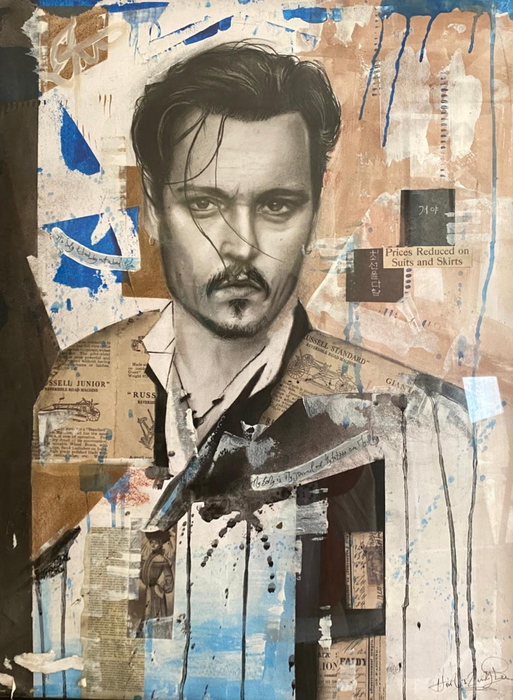

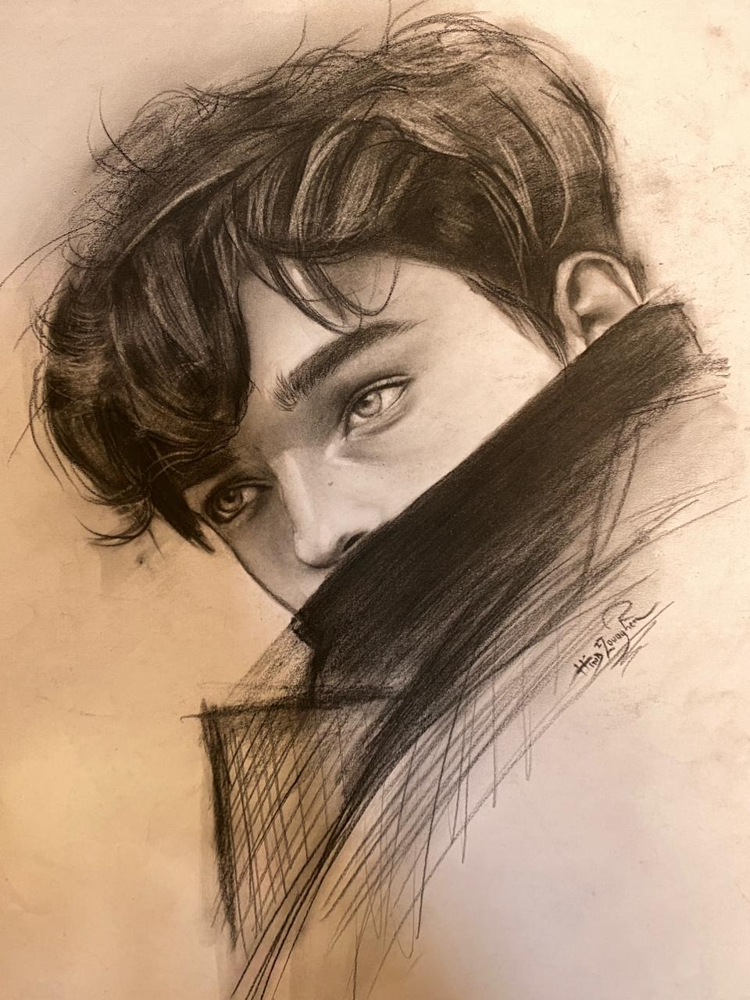
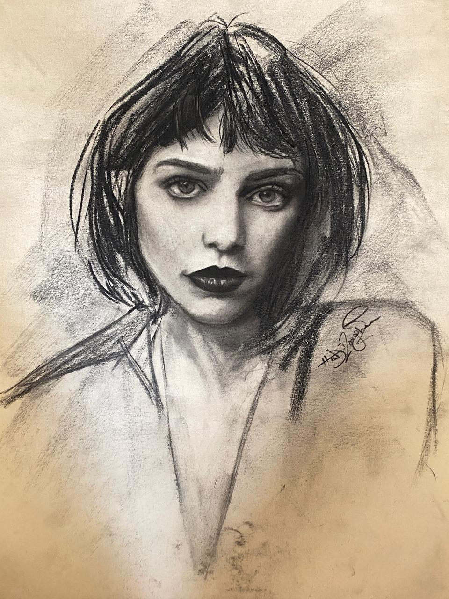
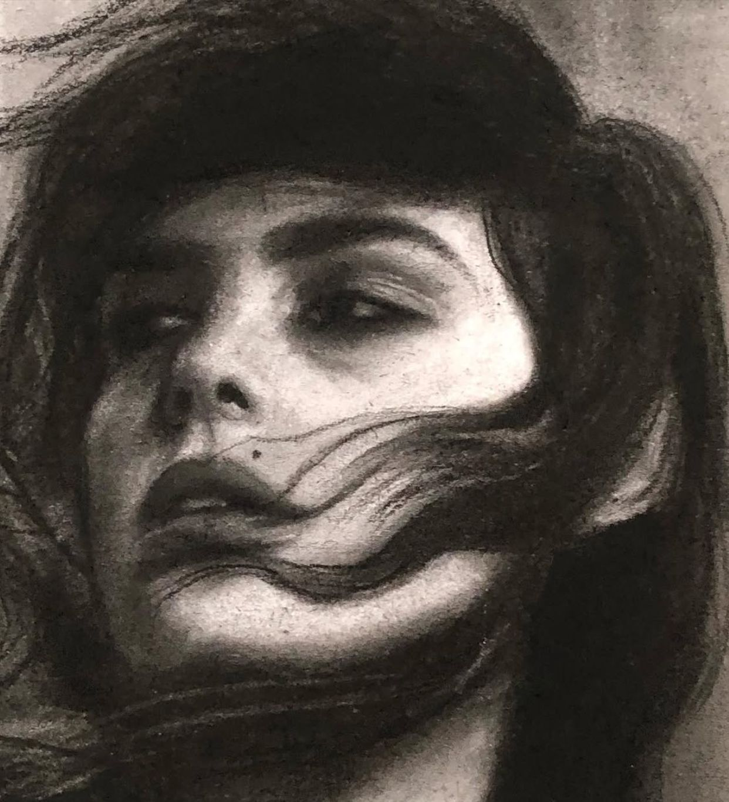

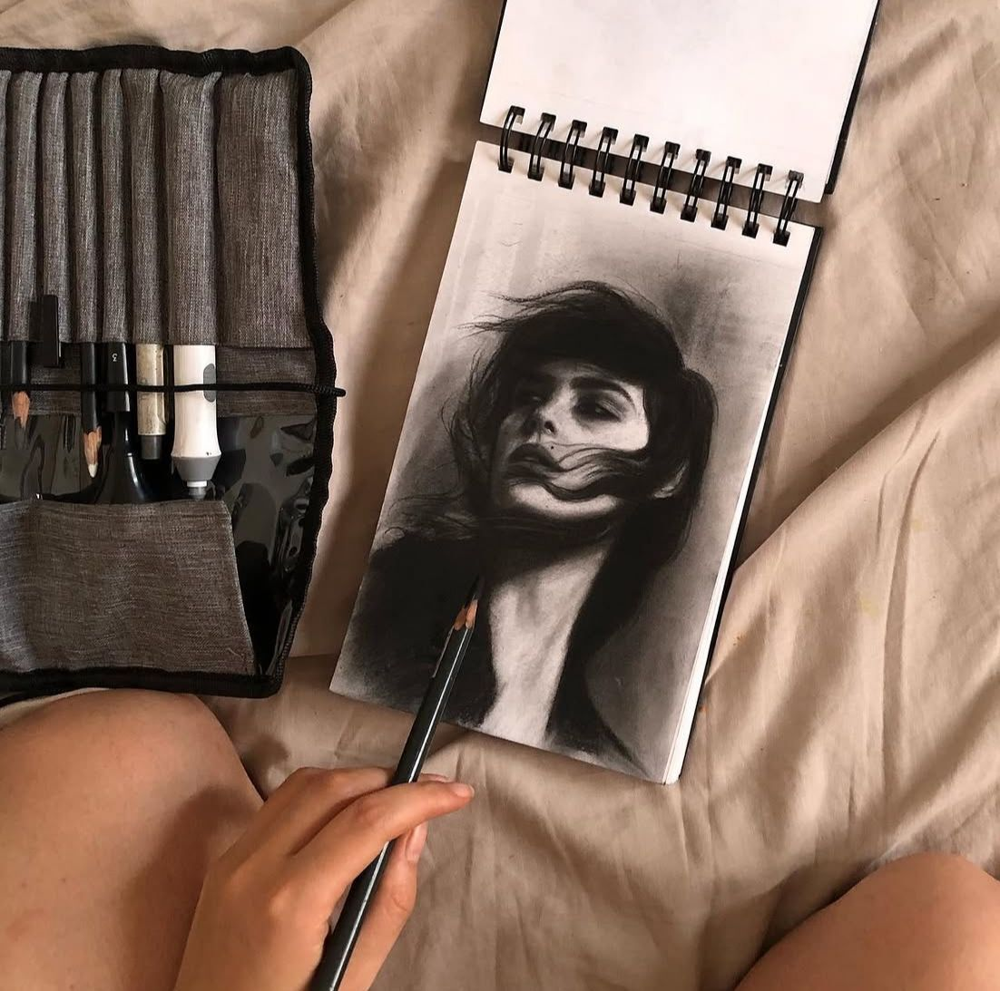

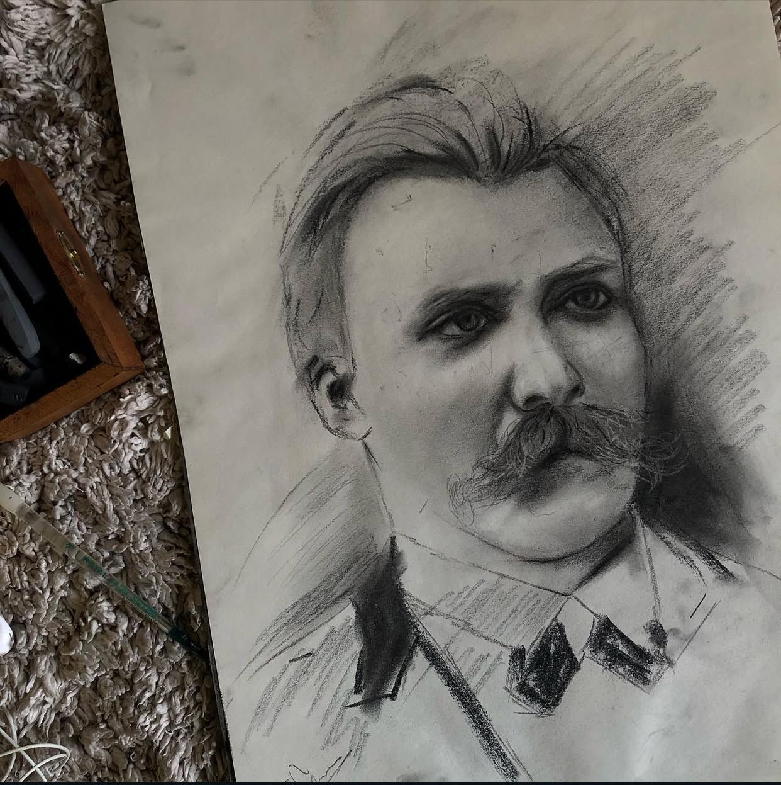

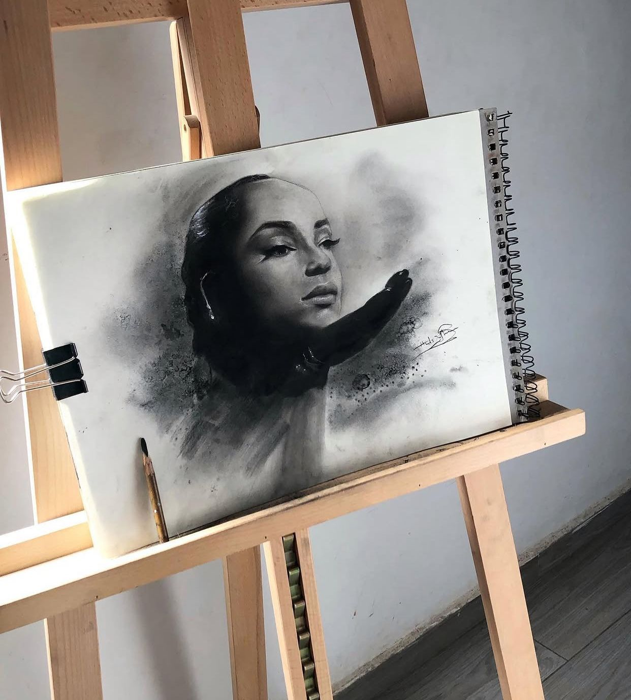
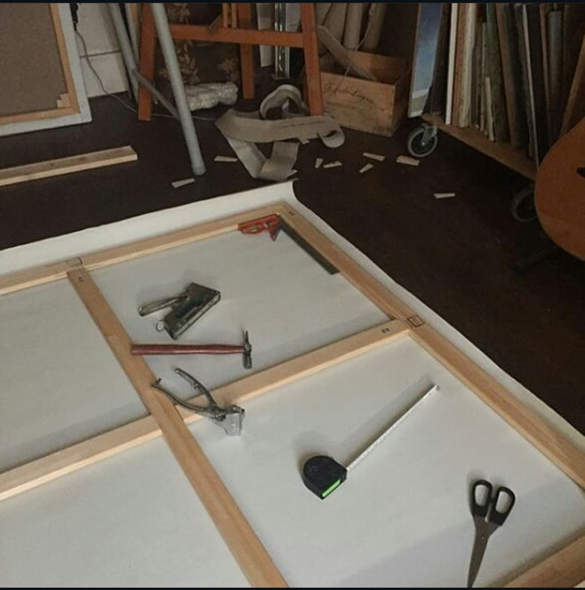

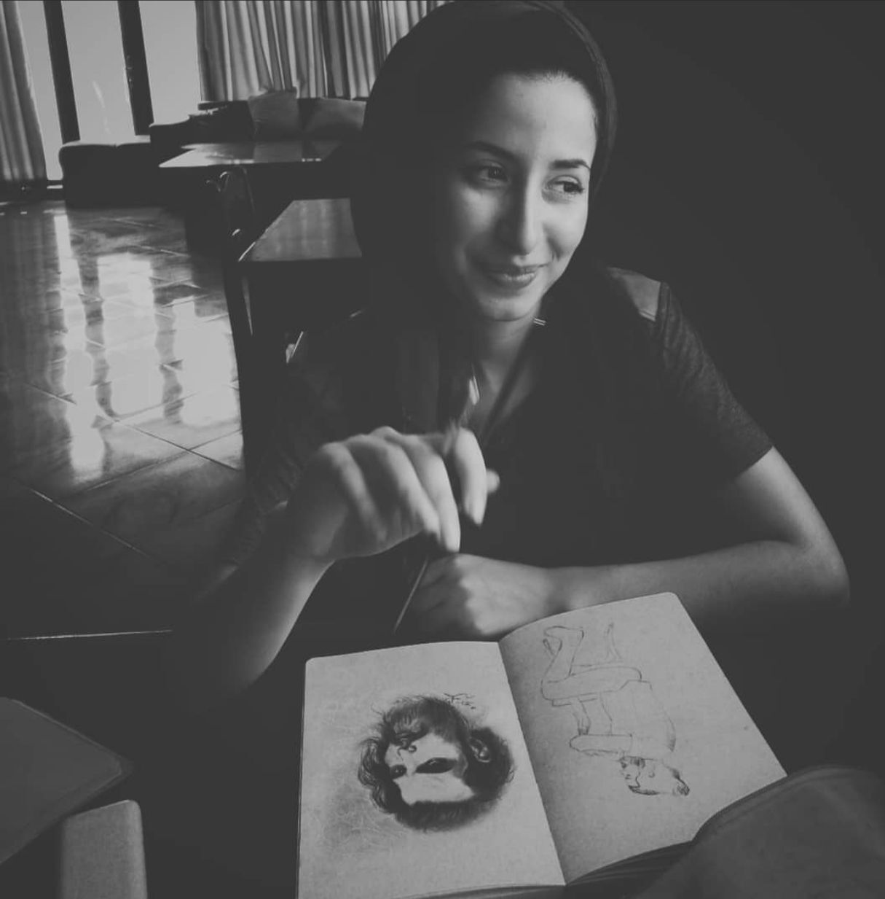

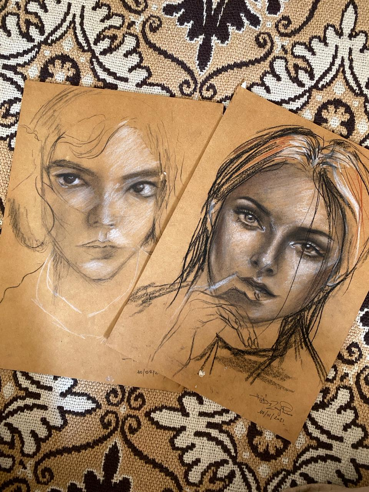
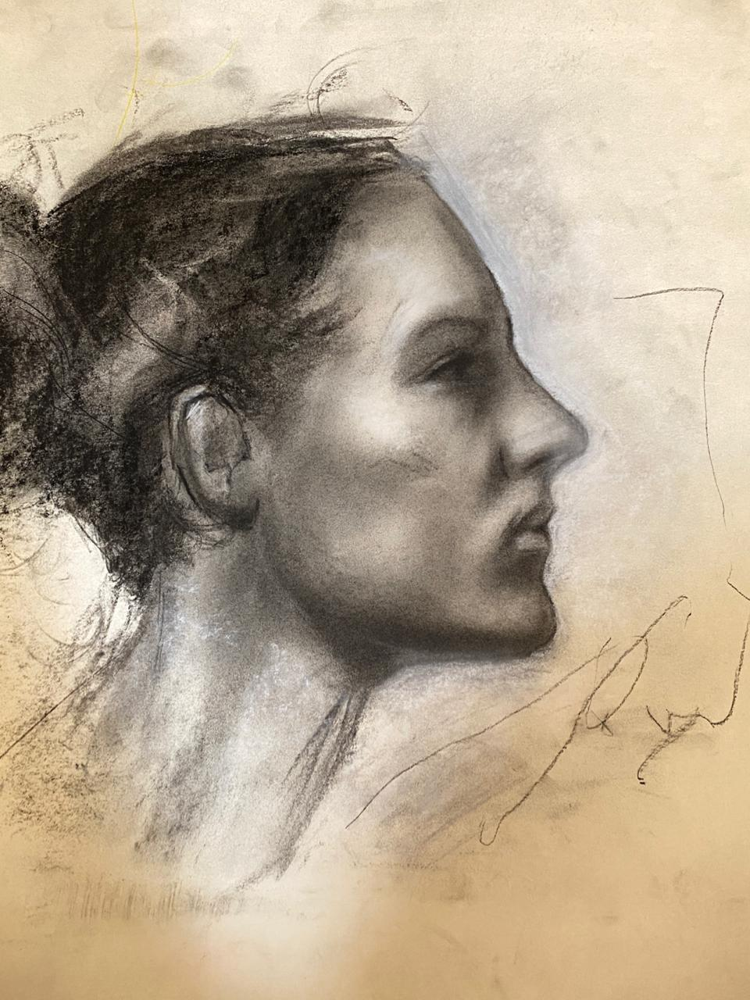

Hind Izouaghen is a 31-year-old painter based in Agadir, Morocco. Coming from a family deeply rooted in the arts, her father is a music teacher, her sister a recognized pianist, and her brother a guitarist and bassist. Entirely self-taught, she blends academic precision with creative freedom.
Her work is centered around women empowerment, Amazigh identity, and facial expression. She portrays women as strong and introspective figures.
Inspired by classical Italian masters like Leonardo da Vinci, her work emphasizes anatomy, proportion, and emotional realism.
Agadir exhibition • TALWEEKEND (3x) • Taghazout • 2M Dream Artist • Tamazight TV
Agadir, Morocco
Hizouaghen@gmail.com
+212675131092










